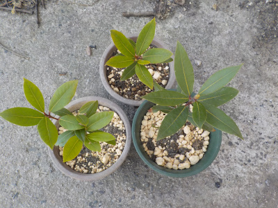
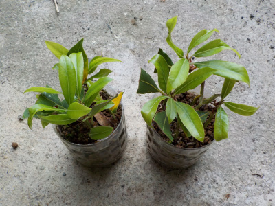
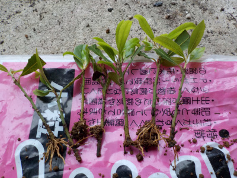
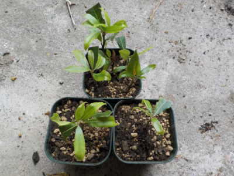
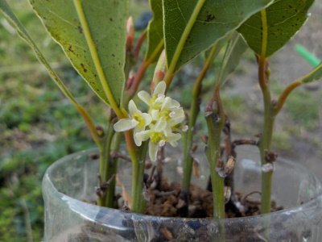
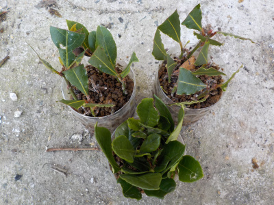
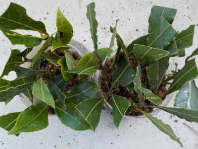
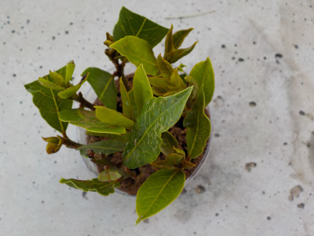

ローリエの鉢を少し大きくしました。
2022/04/09

鉢のサイズを少し大きくしました。
今年は2年目なので、きっとグングン伸びるでしょう。
2022/04/09

鉢のサイズを少し大きくしました。
今年は2年目なので、きっとグングン伸びるでしょう。
2021/05/15

ペットボトルの横から根が確認出来たので植替えすることにしました。

7本根っこが出てました。

全部育てるスペースはないので、根っこが多かった2本は1本ずつ鉢に植え、残りはまとめて一鉢に植えました。
2021/03/28

月桂樹の花って今まで気にしたことなかったです。
小さい花が咲くんですね。初めて見たかも。
2021/01/31

8月と9月に挿し木した月桂樹です。
5か月とか4か月経っているので、多分根っこが出ているのかな。
暖かくなったら植替えします。
（下にあるのはクチナシです。間違えて写真を撮りました）
2020/09/20

月桂樹を強剪定しました。
枝が大量にあるので、少し挿し木に活用しました。
月桂樹の挿し木は今年が初めてなので、どれくらい成功するかわかりません。
これだけやれば数本は成功するかな。
2020/08/30

凝った料理をしないので、ローリエとして使うことはないです。
ローリエ茶にして飲んだりしましたが、好きな味ではなかったです。
あんまり使うことないですが、今年はオリンピックがなかった記念に月桂樹を増やしてみようかなと思いました。
地植えだと大きくなるので、鉢植えで小さく育てたいです。
月桂樹の花言葉は栄光、勝利らしいです。縁起良さそうな木なのでプレゼントによさそうですが、あげることはないかな。